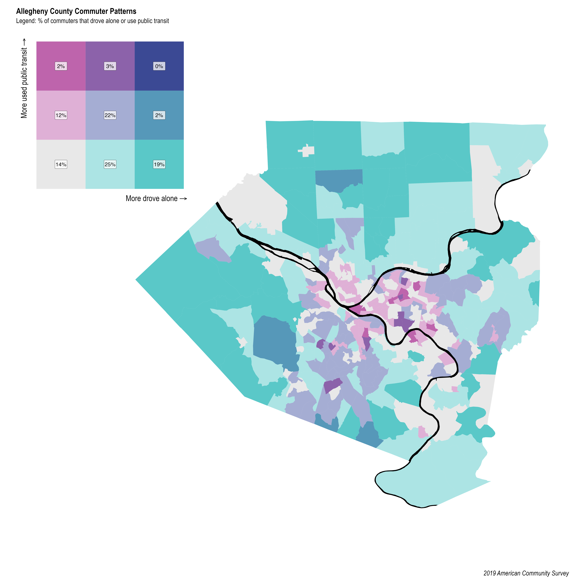

Intro
The clash between public transportation and single passenger vehicles is a heated topic of discussion nationally and in the Pittsburgh area. Public transit ridership has been heavily reduced by COVID-19 in many countries. These two commuting modes compete for the same riders, and investment dollars, and space. Car drivers are frustrated when a bus stops during rush hour to pick up passengers, while bus passengers are frustrated sitting in traffic caused by single passenger vehicles because transit doesn’t have right-of-way.
From my point of view, Pittsburgh’s geography lends itself to a focus on public transit, at the expense of the single passenger vehicle. Most of the jobs in the county are in a single census tract Downtown, which is reflected in the spoke (and no wheel) design of the transit system. Downtown is surrounded by rivers and mountains, which drastically narrows the geography suited to infrastructure. You pretty much have to use a tunnel or bridge to commute Downtown, unless you are coming from directly east. It would make sense to give public transit priority access to those tunnels and bridges, since their throughput is many times higher than roads designated for single passenger vehicles.

The historical priority towards single passenger vehicles is reflected in the Census statistics about commuting modes in the area. Most people in the area commute to work by themselves in cars. In the Wexford-area census tract, 78% (5,141) of commuters drive to work alone (and sit in traffic on the parkway together). Public transit use is limited to areas where the government invested in transit, but even there transit is not typically the majority mode.
In this post I will use {tidycensus} to pull data about how many people commute by driving alone or taking public transit Allegheny County. I chose these two modes because they are the two most popular modes in the county, and are the most different in terms of style. I then graph the data with {ggplot2} and {biscale}. I hack the {biscale} legend a bit to get it to show the % of commuters, which may be of interest to other R users.
Code and graphs
Load libraries and set up the environment:
library(tidyverse)
library(tidycensus)
library(sf)
library(tigris)
library(janitor)
library(biscale)
library(patchwork)
library(hrbrthemes)
library(kableExtra)
options(scipen = 999, digits = 4)
theme_set(theme_ipsum(base_size = 25))These are the variables about commuter mode that the Census has for the 2019 American Community Survey (ACS):
acs1_vars <- load_variables(2019, 'acs1') %>%
mutate(across(c(label, concept), str_to_lower))
acs1_vars %>%
filter(str_detect(name, "^B08301_")) %>%
kbl() %>%
scroll_box(height = "400px") %>%
kable_styling(bootstrap_options = c("striped", "hover", "condensed", "responsive"),
position = "left")| name | label | concept |
|---|---|---|
| B08301_001 | estimate!!total: | means of transportation to work |
| B08301_002 | estimate!!total:!!car, truck, or van: | means of transportation to work |
| B08301_003 | estimate!!total:!!car, truck, or van:!!drove alone | means of transportation to work |
| B08301_004 | estimate!!total:!!car, truck, or van:!!carpooled: | means of transportation to work |
| B08301_005 | estimate!!total:!!car, truck, or van:!!carpooled:!!in 2-person carpool | means of transportation to work |
| B08301_006 | estimate!!total:!!car, truck, or van:!!carpooled:!!in 3-person carpool | means of transportation to work |
| B08301_007 | estimate!!total:!!car, truck, or van:!!carpooled:!!in 4-person carpool | means of transportation to work |
| B08301_008 | estimate!!total:!!car, truck, or van:!!carpooled:!!in 5- or 6-person carpool | means of transportation to work |
| B08301_009 | estimate!!total:!!car, truck, or van:!!carpooled:!!in 7-or-more-person carpool | means of transportation to work |
| B08301_010 | estimate!!total:!!public transportation (excluding taxicab): | means of transportation to work |
| B08301_011 | estimate!!total:!!public transportation (excluding taxicab):!!bus | means of transportation to work |
| B08301_012 | estimate!!total:!!public transportation (excluding taxicab):!!subway or elevated rail | means of transportation to work |
| B08301_013 | estimate!!total:!!public transportation (excluding taxicab):!!long-distance train or commuter rail | means of transportation to work |
| B08301_014 | estimate!!total:!!public transportation (excluding taxicab):!!light rail, streetcar or trolley (carro público in puerto rico) | means of transportation to work |
| B08301_015 | estimate!!total:!!public transportation (excluding taxicab):!!ferryboat | means of transportation to work |
| B08301_016 | estimate!!total:!!taxicab | means of transportation to work |
| B08301_017 | estimate!!total:!!motorcycle | means of transportation to work |
| B08301_018 | estimate!!total:!!bicycle | means of transportation to work |
| B08301_019 | estimate!!total:!!walked | means of transportation to work |
| B08301_020 | estimate!!total:!!other means | means of transportation to work |
| B08301_021 | estimate!!total:!!worked from home | means of transportation to work |
Driving alone in a single-passenger vehicle is by far the dominant commuting mode in the county.
all_transit_vars <- c("B08301_003",
"B08301_004",
"B08301_010",
"B08301_016",
"B08301_017",
"B08301_018",
"B08301_019",
"B08301_020",
"B08301_021")
all_transit_modes <- get_acs(geography = "county",
variables = acs1_vars %>%
filter(name %in% all_transit_vars) %>%
pull(name, label),
summary_var = "B08301_001",
year = 2019, state = "PA", county = "Allegheny",
geometry = F)
all_transit_modes %>%
mutate(variable = str_remove(variable, "^estimate!!total:"),
variable = str_remove(variable, "\\(excluding taxicab\\)"),
variable = str_remove_all(variable, "\\!"),
variable = str_remove(variable, ":$"),
variable = str_replace(variable, ":", " : "),
variable = str_trim(variable),
variable = str_to_title(variable)) %>%
group_by(variable) %>%
summarize(estimate = sum(estimate),) %>%
mutate(variable = fct_reorder(variable, estimate),
pct = estimate / sum(estimate)) %>%
ggplot(aes(estimate, variable)) +
geom_col() +
geom_text(aes(x = estimate + 26000, label = scales::percent(pct, 1)),
size = 4) +
labs(title = "Allegheny County Commuter Modes",
subtitle = "2019 American Community Survey",
x = "Commuters",
y = NULL) +
scale_x_comma(limits = c(0, 500000),
labels = c("0", "1k", "2k", "3k", "4k", "5k")) +
theme_ipsum(axis_text_size = 15)I will use these two variables to directly compare the use of single-passenger vehicles and public transit in the county.
vars <- c("Drove alone" = "B08301_003",
"Public transportation" = "B08301_010")
acs1_vars %>%
filter(name %in% vars) %>%
pull(label)[1] "estimate!!total:!!car, truck, or van:!!drove alone"
[2] "estimate!!total:!!public transportation (excluding taxicab):"This downloads the commuter mode data and subtracts the rivers from the census tract polygons so it looks nice on a map:
tract_transit %>%
glimpse()Rows: 804
Columns: 5
$ GEOID <chr> "42003408002", "42003408002", "42003210700", "42003210700"…
$ variable <chr> "Drove alone", "Public transportation", "Drove alone", "Pu…
$ estimate <dbl> 2815, 8, 589, 189, 566, 146, 1224, 260, 466, 100, 1063, 21…
$ summary_est <dbl> 3165, 3165, 1231, 1231, 1110, 1110, 1992, 1992, 702, 702, …
$ geometry <POLYGON [°]> POLYGON ((-79.99 40.61, -79..., POLYGON ((-79.99 4…As discussed earlier, public transit is not the majority commuting mode in most areas:
tract_transit %>%
st_drop_geometry() %>%
group_by(GEOID) %>%
mutate(pct_tract_commuters = estimate / sum(estimate),
combined_commuters = sum(estimate)) %>%
ungroup() %>%
mutate(GEOID = fct_reorder(GEOID, summary_est)) %>%
arrange(desc(GEOID), desc(summary_est)) %>%
mutate(is_downtown_label = case_when(GEOID == "42003020100" & variable == "Drove alone" ~ "Downtown*",
TRUE ~ NA_character_)) %>%
slice(1:60) %>%
ggplot(aes(estimate, GEOID, fill = variable)) +
geom_col(color = "black") +
geom_text(aes(x = estimate + 3000, label = is_downtown_label)) +
labs(title = "Top 30 census tracts",
subtitle = "Total commuter population from all modes",
x = "Commuters",
y = "Census tracts",
fill = "Commute mode") +
scale_x_comma() +
theme_ipsum(base_size = 15) +
theme(axis.text.y = element_blank(),
panel.grid.major = element_blank())*Most commuters that live in Downtown walk to work.
This shows that in absolute numbers, driving alone swamps public transit across the county.
scatter_graph <- tract_transit %>%
st_drop_geometry() %>%
select(GEOID, variable, estimate) %>%
pivot_wider(names_from = variable, values_from = estimate) %>%
clean_names() %>%
ggplot(aes(drove_alone, public_transportation)) +
geom_point(alpha = .7, size = 1) +
labs(title = "Commuter modes in Allegheny County",
x = "Driving Alone",
y = "Using Public Transportation") +
scale_x_comma() +
scale_y_comma() +
tune::coord_obs_pred() +
theme_ipsum(base_size = 15)
scatter_graphI made the X and Y axes symmetric to emphasize the difference in scale between the two variables.
This uses the bi_class function to divide the data into discrete bins based on how many people drive alone vs. use public transit. This turns two continuous variables into one categorical variable. I had to play around with the style argument to find an option that worked for the unbalanced data.
transit_bivariate_geo <- tract_transit %>%
st_drop_geometry() %>%
drop_na(estimate) %>%
select(GEOID, variable, estimate) %>%
pivot_wider(names_from = variable, values_from = estimate) %>%
clean_names() %>%
replace_na(list(drove_alone = 0, public_transportation = 0)) %>%
bi_class(x = drove_alone,
y = public_transportation,
style = "fisher",
dim = 3) %>%
left_join(tracts,
by = c("geoid" = "GEOID")) %>%
st_sf()
glimpse(transit_bivariate_geo)Rows: 402
Columns: 9
$ geoid <chr> "42003408002", "42003210700", "42003220600", "42…
$ drove_alone <dbl> 2815, 589, 566, 1224, 466, 1063, 887, 826, 551, …
$ public_transportation <dbl> 8, 189, 146, 260, 100, 215, 262, 342, 670, 61, 3…
$ bi_class <chr> "3-1", "1-2", "1-1", "2-2", "1-1", "2-2", "1-2",…
$ NAME <chr> "Census Tract 4080.02, Allegheny County, Pennsyl…
$ variable <chr> "B08301_001", "B08301_001", "B08301_001", "B0830…
$ estimate <dbl> 3165, 1231, 1110, 1992, 702, 1487, 1317, 1712, 1…
$ moe <dbl> 231, 199, 116, 189, 80, 233, 163, 185, 257, 104,…
$ geometry <POLYGON [°]> POLYGON ((-79.99 40.61, -79..., POLYGON …table(transit_bivariate_geo$bi_class) %>%
enframe(name = "bi_class", value = "count_tracts") %>%
kbl()| bi_class | count_tracts |
|---|---|
| 1-1 | 124 |
| 1-2 | 72 |
| 1-3 | 9 |
| 2-1 | 84 |
| 2-2 | 66 |
| 2-3 | 9 |
| 3-1 | 34 |
| 3-2 | 4 |
This graph overlays the discrete biscale bins on the previous data to show how the function discretized the data.
transit_bivariate_geo %>%
ggplot(aes(drove_alone, public_transportation, color = bi_class)) +
geom_point(alpha = .75, size = 1) +
scale_x_comma() +
labs(x = "Drove Alone",
y = "Used Public Transit") +
guides(color = FALSE) +
theme_ipsum(base_size = 15)Note that the X and Y axes are independent in this graph.
This creates the biscale legend I will put next to the map.
bi_var_legend <- bi_legend(pal = "DkBlue",
dim = 3,
xlab = " More drove alone",
ylab = "More used public transit",
size = 26) +
theme(plot.background = element_rect(fill = alpha("white", 0)),
panel.background = element_rect(fill = alpha("white", 0)))
bi_var_legendI would like to show the % of commuters that each bin represents, so I extract the color palette from the ggplot2 object and make my own legend with geom_tile.
built_legend <- ggplot_build(bi_var_legend)
legend_palette <- built_legend$data[[1]] %>%
mutate(bi_class = str_c(x, y, sep = "-")) %>%
select(fill, bi_class)
legend_palette %>%
kbl()| fill | bi_class |
|---|---|
| #e8e8e8 | 1-1 |
| #ace4e4 | 2-1 |
| #5ac8c8 | 3-1 |
| #dfb0d6 | 1-2 |
| #a5add3 | 2-2 |
| #5698b9 | 3-2 |
| #be64ac | 1-3 |
| #8c62aa | 2-3 |
| #3b4994 | 3-3 |
transit_bivariate <- transit_bivariate_geo %>%
st_drop_geometry() %>%
select(geoid, bi_class, drove_alone, public_transportation) %>%
separate(bi_class,
into = c("drove_alone_bi", "public_transportation_bi"),
sep = "-",
remove = FALSE) %>%
complete(drove_alone_bi, public_transportation_bi, fill = list(drove_alone = 0, public_transportation = 0)) %>%
mutate(bi_class = str_c(drove_alone_bi, public_transportation_bi, sep = "-"),
total = drove_alone + public_transportation,
pct_commuters = total / sum(total)) %>%
group_by(bi_class, drove_alone_bi, public_transportation_bi) %>%
summarize(count_tract = n(),
pct_commuters = sum(pct_commuters)) %>%
ungroup()
glimpse(transit_bivariate)Rows: 9
Columns: 5
$ bi_class <chr> "1-1", "1-2", "1-3", "2-1", "2-2", "2-3", "3-…
$ drove_alone_bi <chr> "1", "1", "1", "2", "2", "2", "3", "3", "3"
$ public_transportation_bi <chr> "1", "2", "3", "1", "2", "3", "1", "2", "3"
$ count_tract <int> 124, 72, 9, 84, 66, 9, 34, 4, 1
$ pct_commuters <dbl> 0.13661, 0.11754, 0.02073, 0.25273, 0.22252, …legend_palette <- transit_bivariate %>%
distinct(bi_class) %>%
left_join(legend_palette, by = "bi_class")
legend_palette %>%
kbl()| bi_class | fill |
|---|---|
| 1-1 | #e8e8e8 |
| 1-2 | #dfb0d6 |
| 1-3 | #be64ac |
| 2-1 | #ace4e4 |
| 2-2 | #a5add3 |
| 2-3 | #8c62aa |
| 3-1 | #5ac8c8 |
| 3-2 | #5698b9 |
| 3-3 | #3b4994 |
Note that scale_fill_manual uses the palette I extracted from the ggplot2 object.
bi_var_legend_new <- transit_bivariate %>%
mutate(pct_commuters = scales::percent(pct_commuters, accuracy = 1)) %>%
ggplot(aes(x = drove_alone_bi, y = public_transportation_bi, fill = bi_class)) +
geom_tile() +
geom_label(fill = "white", alpha = .75, size = 12, label = " ") +
geom_text(aes(label = pct_commuters), alpha = 1, size = 7) +
coord_fixed(ratio = 1) +
labs(x = substitute(paste("More drove alone", "" %->% "")),
y = substitute(paste("More used public transit", "" %->% ""))) +
guides(fill = FALSE) +
scale_fill_manual(values = pull(legend_palette, fill)) +
theme_ipsum(plot_title_size = 30,
axis_title_size = 30) +
theme(panel.grid.major = element_blank(),
panel.grid.minor = element_blank(),
panel.background = element_blank(),
axis.text.x = element_blank(),
axis.text.y = element_blank(),
axis.ticks = element_blank())
bi_var_legend_new +
labs(title = 'Percent of "drive alone" + "public transit" commuters')This creates the map of commuter mode by census tract, filled by the discretized biscale bin.
transit_bi_var_plot <- transit_bivariate_geo %>%
ggplot(aes(fill = bi_class)) +
geom_sf(show.legend = FALSE, lwd = 0) +
geom_sf(data = rivers, fill = "black", color = "black") +
bi_scale_fill(pal = "DkBlue", dim = 3) +
bi_theme() +
theme_ipsum(base_size = 15) +
theme(axis.text.x = element_blank(),
axis.text.y = element_blank(),
panel.background = element_blank(),
panel.grid.major = element_blank(),
panel.grid.minor = element_blank())
transit_bi_var_plotNow that I have my legend and map, I use patchwork to stitch them together.
design = c(area(t = 2, l = 4, b = 20, r = 20),
area(t = 1, l = 1, b = 6, r = 6))
plot(design)combined_bi_var_plot <- transit_bi_var_plot + bi_var_legend_new +
plot_layout(design = design) +
plot_annotation(title = "Allegheny County Commuter Patterns",
subtitle = "Legend: % of commuters that drove alone or use public transit",
caption = "2019 American Community Survey",
theme = theme(panel.background = element_rect(fill = "black"),
plot.title = element_text(size = 30),
plot.subtitle = element_text(size = 25),
plot.caption = element_text(size = 25)))
Links:
- https://www.pghcitypaper.com/pittsburgh/low-income-pittsburghers-are-becoming-increasingly-reliant-on-public-transit-bikes-walking-and-alternative-transportation/Content?oid=19059768
- https://www.pghcitypaper.com/pittsburgh/new-commutes-analyzing-the-changing-ways-pittsburghers-get-to-work/Content?oid=6405396
- https://www.pghcitypaper.com/pittsburgh/pittsburgh-is-the-7th-least-car-dependent-metro-in-america-study-says/Content?oid=16755873
- https://www.nytimes.com/2020/07/09/opinion/sunday/ban-cars-manhattan-cities.html
- https://www.nytimes.com/2021/03/25/climate/buses-trains-ridership-climate-change.html
- https://nacto.org/publication/transit-street-design-guide/introduction/why/designing-move-people/
- https://rweekly.org/